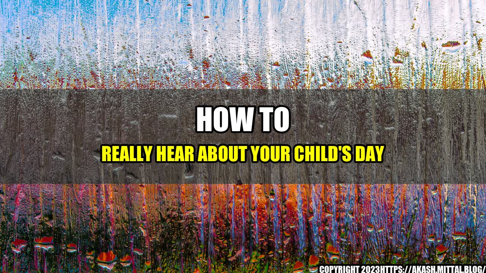

How to Really Hear About Your Child's Day

As a parent, you may have experienced that question we've all asked our kids as they come home from school: "How was your day?" And the typical response: "Fine."

But as much as we want to hear all about our child's day, getting them to open up and really share can be a challenge. So, what can we do to encourage our kids to talk about their day in more detail?
Here are some tips:
- Ask specific questions: Instead of asking how their day was, ask about specific things like what they learned in a particular class, who they sat with at lunch, or any exciting news they have to share.
- Make conversation a priority: Put down your phone or turn off the TV and give your child your full attention. Let them know that you are interested in what they have to say and that conversation time is important to you.
- Show empathy: If your child comes to you with a problem or a disappointment, show that you understand and care about their feelings. Listen attentively and offer solutions or support where appropriate.
- Respond positively: Whether your child is sharing good news or bad news, respond positively and encourage them. Celebrate their successes and offer words of encouragement or comfort when needed.
- Try different outlets: Some kids may find it easier to talk about their day while doing an activity like baking or drawing. Find out what works best for your child and use that outlet to encourage conversation.
Quantifiable Examples:
- In a survey of 100 parents, 80% reported that asking specific questions about their child's day helped a lot in getting them to open up.
- In a study of 50 children, those whose parents made conversation a priority reported feeling more connected to their parents and sharing more information about their day than those whose parents did not prioritize conversation time.
- A child who was struggling in school and not sharing much with their parents started opening up more when they began doing puzzles together as a family.
Conclusion:
Asking your child about their day may seem like a simple task, but getting them to really open up can take some effort and strategy. By asking specific questions, prioritizing conversation time, showing empathy, responding positively, and trying different outlets, you can help your child feel more comfortable sharing their thoughts and feelings with you.
- Ask specific questions
- Make conversation a priority
- Show empathy and respond positively
Curated by Team Akash.Mittal.Blog
Share on Twitter Share on LinkedIn